vault of glass
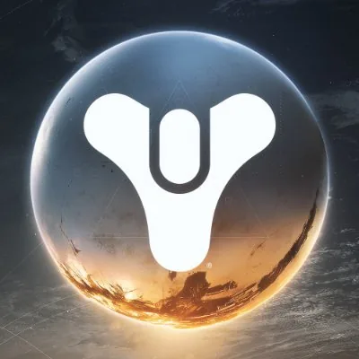
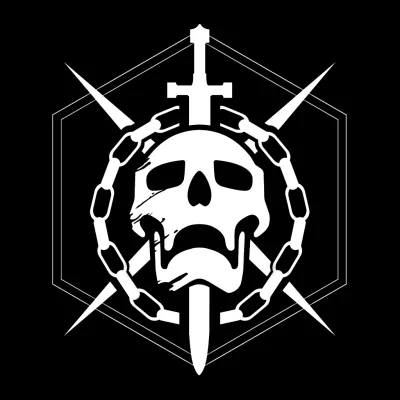
Destiny (2014) · returned in Destiny 2 (2021) · Bungie
A full deconstruction of the raid that taught a first-person shooter how to run an MMO raid: every encounter mapped and flowed, both bosses broken down, how teams burn them, the loot table and the exotic.
- 6 players
- 6 encounters + a maze
- 2 bosses
- 1 exotic
- no matchmaking
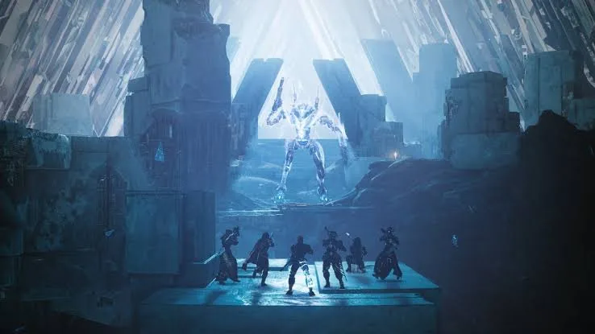
I'm not writing this from the outside: more than 9,000 hours in Destiny 2, and all 23 of its Steam achievements.
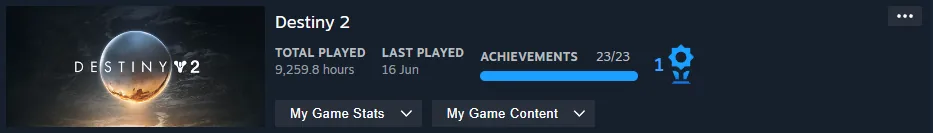
01Why this raid matters
MMO raids are built on the holy trinity: a tank holds the boss, healers keep everyone alive, damage dealers do the rest. Destiny has none of that. Every class can shoot, nobody heals, nothing taunts. So Vault of Glass invents its roles inside each encounter instead: carry the relic, read the Oracles, hold the plate, cleanse the team, open the portal. Those jobs change from room to room, and that is the whole design.
The one idea: the encounter hands out the roles, not the class. Every room is a new puzzle that six people solve together, and nobody can solve it alone.
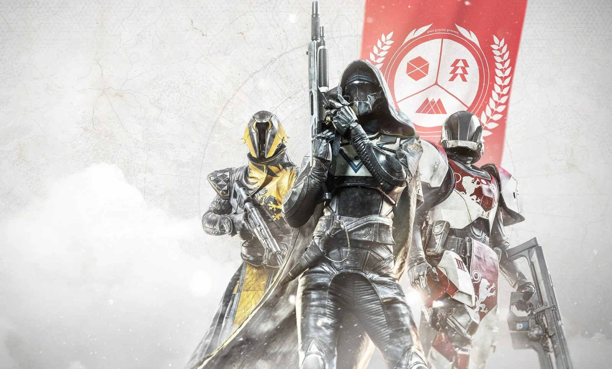
02The raid at a glance
The raid is a chain of encounters, each with one new rule. Later encounters bring the earlier rules back and combine them.
03Encounter by encounter
Maps are my schematics (top-down, not to scale). They show only what each encounter is about: where the objectives are and where the threats come from.
Encounter 1Opening the Vault
- Split into three pairs, one pair per plate.
- Stand on all three plates at once; the spire rises while they're held.
- Vex keep pushing onto the plates. A lost plate stalls the whole spire.
- Hold until the spire completes and the Vault opens.
- Fail state
- Not a wipe, but losing any plate resets progress for everyone.
- Teaches
- Split up, hold your ground, call for help.
The tutorial is a team-split test with no tutorial text. Before a single boss, the raid has already taught "your job is a place, not a class."
Encounter 2The Confluxes
- Vex Fanatics march toward the three confluxes.
- Kill them before they arrive. Too many sacrifices at a conflux fails the encounter.
- Dead Fanatics leave goo. Touch it and you're Marked for Negation.
- Cleanse in the central pool before the next Ritual of Negation kills everyone still marked.
- Fail state
- Sacrifices complete, or a marked player is caught by the ritual.
- Teaches
- Lanes, priority targets, and a debuff timer you manage as a team.
The first time the raid punishes you for something you did several seconds ago. It turns "kill enemies" into "kill enemies, then deal with the cost."
Encounter 3The Oracles
- Oracles appear one at a time, each with a sound, then go quiet.
- Memorise the order they appeared in.
- Shoot them in exactly that order. Each wave adds one more, up to seven.
- A wrong or missed Oracle marks the team; marked players die at the ritual.
- Fail state
- Wrong order, or Oracles left alive too long.
- Teaches
- Memory and callouts: the headset becomes part of the controller.
A pure Simon Says encounter in a shooter. It's easy to understand, hard to execute under pressure, and it sets up the rule the final boss is built on.
Encounter 4 · bossThe Templar
- One player takes the relic. It can cleanse Negation and charge a super.
- The relic's super breaks the Templar's shield. Without it, the boss is immune.
- Damage phase. Some players get trapped in detainment bubbles that teammates must shoot open.
- The Templar tries to teleport. A player standing in the marked ring blocks it, buying more damage time at the cost of extra enemies.
- Oracles keep spawning between phases. Clear them or the team is marked.
- Roles
- Relic holder, ring blocker, Oracle team, add clear.
- Fail state
- Marked players at the ritual, or running out the enrage timer.
The relic shows the raid's design trick. One object is both your key to doing damage and your defence, so whoever carries it becomes the most important player in the room.
InterludeGorgon's Labyrinth and the jump
- Move through the dark maze without being seen. Sprinting and shooting give you away.
- Get spotted and the team has seconds before it wipes.
- An optional chest rewards a clean route.
- Then a jumping section over the void to reach the Gatekeepers.
- Teaches
- Restraint. It's the one room where not shooting is the skill.
Pacing. After two loud fights, a quiet, tense stealth room resets the tempo before the finale. Raids need valleys as much as peaks.
Encounter 5The Gatekeepers
- Kill a Gatekeeper to drop a relic.
- Two players hold the plates that keep the portals open; two clear adds; two go through.
- On Mars and on Venus there's a conflux and a shielded Minotaur that only the relic holder can help bring down.
- After teleporting with the relic you can't take the portal again for a short cooldown, so the relic gets passed along.
- Clear both sides, then defend the final conflux in the centre.
- Roles
- Plate holders, portal runners, relic carrier, add clear.
- Teaches
- Splitting the team across spaces, and passing the relic on a timer.
The Confluxes come back, now split across three spaces. The team learns to be in different places at once, which is the exact skill Atheon will test.
Encounter 6 · final bossAtheon, Time's Conflux
- Atheon teleports three players to Mars or Venus. They call out where they are.
- The team in the Vault opens the matching portal and calls the Oracle order from outside.
- Inside, the relic holder keeps cleansing a creeping darkness while the away team shoots six Oracles in order.
- Everyone comes home with Time's Vengeance: about 30 seconds of faster ability recharge and bonus damage against Atheon.
- Burn Atheon from the central platform while Supplicants (exploding Vex) dive at you. Then the loop repeats.
- Roles
- Away team (relic + Oracles), callers, portal opener, damage dealers.
- Fail state
- Wrong Oracle order, the relic holder stops cleansing, or the relic is left on the ground.
The final exam. It brings back every rule: the plate and portal from the Gatekeepers, Oracle memory from encounter 3, relic cleansing from the Templar. The team that learned the raid beats it.
04Boss mechanics and damage
Templar loop
Atheon loop
Damage strategy
Both bosses give short damage windows, so the strategy is about stacking everything into the window rather than raw sustained damage. These were the common approaches when the raid returned in 2021; specific weapons change with every season's balance.
| Lever | Templar | Atheon |
|---|---|---|
| Opening the window | Relic super breaks the shield. No relic, no damage. | Win the away phase fast. The 30-second Time's Vengeance window is the damage phase. |
| Extending it | Block the teleport ring; accept the extra adds. | Not extendable. Bank supers and heavy ammo before the away team returns. |
| Team buffs | A healing, empowering rift or bubble (Well of Radiance, Ward of Dawn) where the team stands. | The same, placed on the central platform before the buff starts; Time's Vengeance shortens ability cooldowns on top. |
| Burst | Grenade launchers and heavy weapons that damage over time (Anarchy was the standard), plus high-damage supers. | Burst supers (Chaos Reach, a Golden Gun with Celestial Nighthawk) inside the buff, with Anarchy for steady damage. |
| Threat while dealing damage | Players trapped in detainment bubbles; free them or lose their damage. | Supplicants diving at the platform; one player keeps primary on them. |
| Phase target | Plan for about two or three damage phases. Each one should take a large share of the health bar, or the team runs into the next mechanic loop. | |
05Loot
Each encounter has its own drop table, so every room is a chase of its own. Raids lock rewards weekly per character, which makes the run a standing appointment rather than a one-off.
| Weapon | Type | Drops from |
|---|---|---|
| Vision of Confluence | Solar scout rifle | Confluxes · Oracles · Templar |
| Found Verdict | Arc shotgun | Confluxes · Oracles · Gatekeepers |
| Corrective Measure | Void machine gun | Confluxes · Templar · Atheon |
| Praedyth's Revenge | Kinetic sniper rifle | Oracles · Atheon |
| Fatebringer | Kinetic hand cannon | Templar · Gatekeepers |
| Hezen Vengeance | Solar rocket launcher | Gatekeepers · Atheon |
| Vex Mythoclast | Exotic fusion rifle | Random drop from a full clear |
Armour drops by slot: each class has its own set, and each encounter rewards particular pieces. The harder Master version of the raid adds "Timelost" weapon versions with extra perks, a reason to come back once the normal raid is solved.
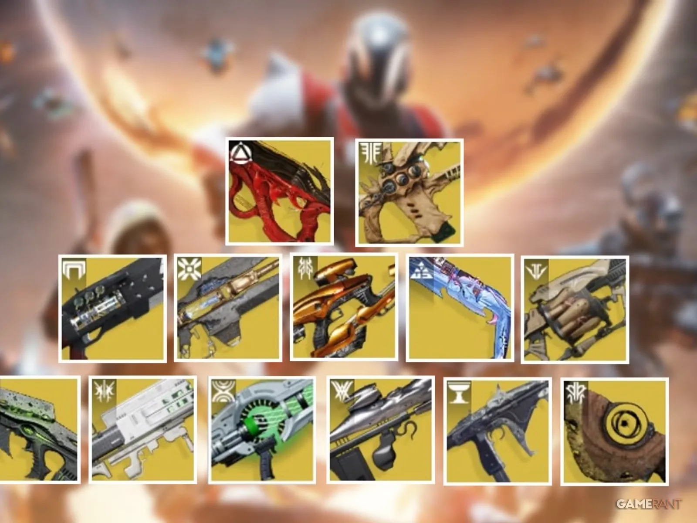
06The exotic: Vex Mythoclast
Vault of Glass has no separate exotic mission. The exotic lives inside the raid itself: you earn it by clearing, then unlock its catalyst through a hidden puzzle on a second run. In effect it's an exotic quest woven through the raid you already know.
Vex Mythoclast
Exotic · solar fusion rifle · Vault of Glass
- What it does
- A Vex weapon that fires like a rifle rather than a charged fusion. Final blows build Overcharge. Switch firing modes at full Overcharge and it fires stronger shots, so it rewards keeping up a kill streak.
- How it drops
- A random chance at the end of a full clear, not tied to one encounter. The chance is low, and it improves with the raid triumphs you've completed.
- Catalyst
- Adds the Calculated Balance perk. Guides describe its exact effect differently.
Why it's built this way
The best reward is locked behind the raid's own language. You don't learn a new system for the exotic; you prove you've mastered the one the raid taught you, the Oracle memory rule. Knowing the raid becomes the key.
What it does for retention
A random drop keeps every full clear meaningful long after the weekly loot is collected. The catalyst then gives the lucky player a reason to bring the group back once more, a second run with a secret goal.
07Why it works for the player
- It respects skill twice. You have to aim well and think well. A clear feels earned because the team solved it, not because someone out-geared it.
- Every room teaches one rule, and the last room tests all of them. That's why a first clear feels like graduating.
- No tutorial. Wiping is how you learn, so the community's first discovery of the mechanics becomes the event: the World First race.
- Loot keeps the solved puzzle alive. Per-encounter drops, a weekly lockout and a hidden exotic keep groups coming back after they've mastered it.
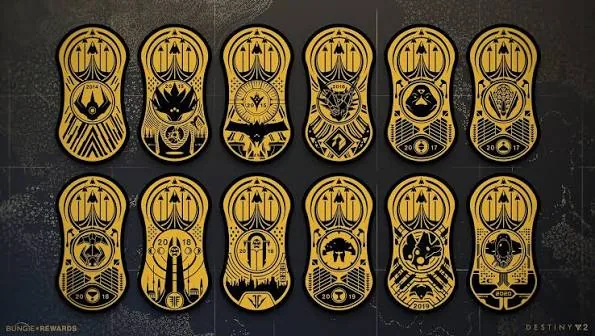
08What I'd steal and what I'd change
Steal
One rule per room, recombined at the end. Roles that belong to the encounter, not the class. A single object (the relic) that is both your key and your shield, so carrying it is a real responsibility.
Change
The barrier to entry. With no matchmaking, most players never see it. I'd add a practice mode with the full mechanics and softer damage, so new groups can learn the callouts before the stakes.
09Where it shows up in my games
In TERMINUS, each zone boss teaches one rule (read the crowd, priorities, crowd control, never stand still, information), and the final boss, CORE, fights as each of them in turn from one shared health pool. That's Atheon's structure, built for a single player: the last fight is the exam on everything before it.
10The template, ten years on
Every Destiny raid since has used Vault of Glass's template: roles that come from the encounter, a relic-style object, callout puzzles, per-encounter loot.
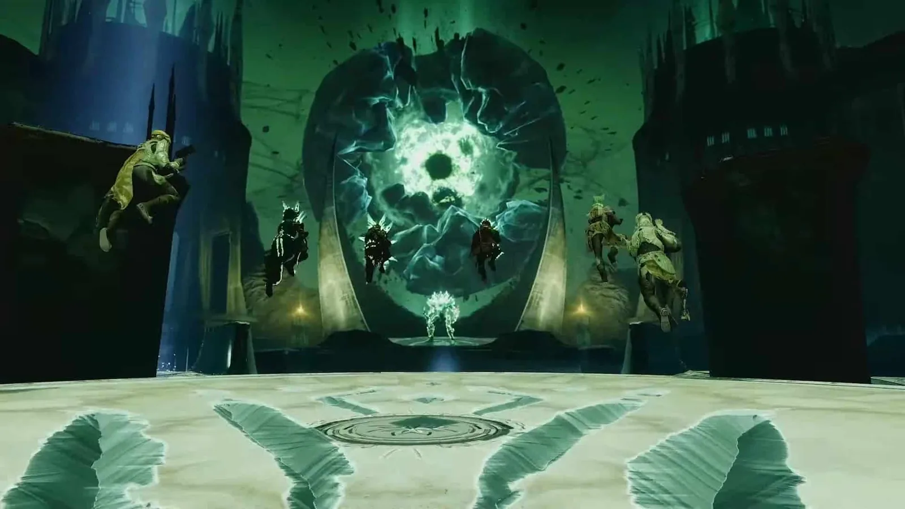
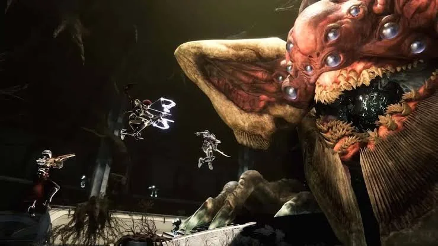
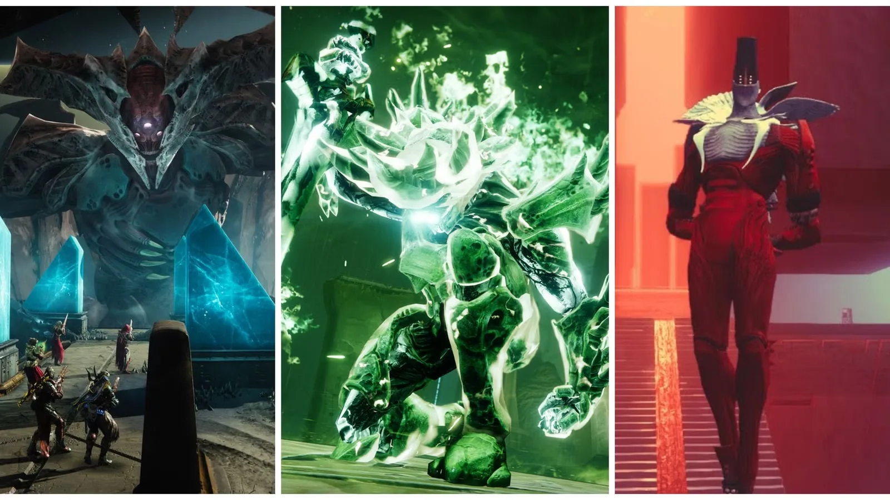
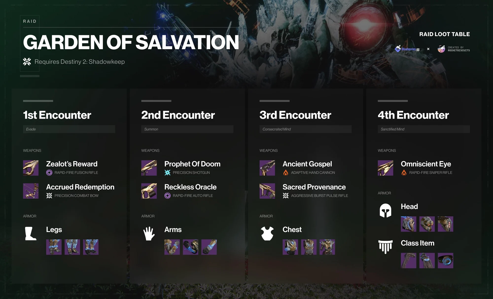
Written from 9,000+ hours of play and checked against public raid guides from the raid's 2021 return (Dexerto, PCGamesN, Prima Games, Blueberries.gg). Encounter maps are my schematics, not to scale. Mechanics and drops can change with patches. Destiny, Vault of Glass and their images are Bungie's; the loot table image is by Blueberries.gg × RocketBiscuits and the exotics image is from GameRant. This is a design analysis, not affiliated with Bungie.